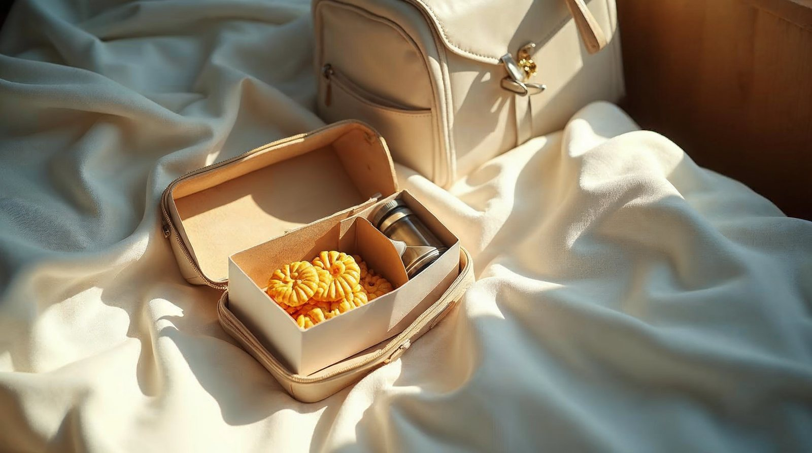
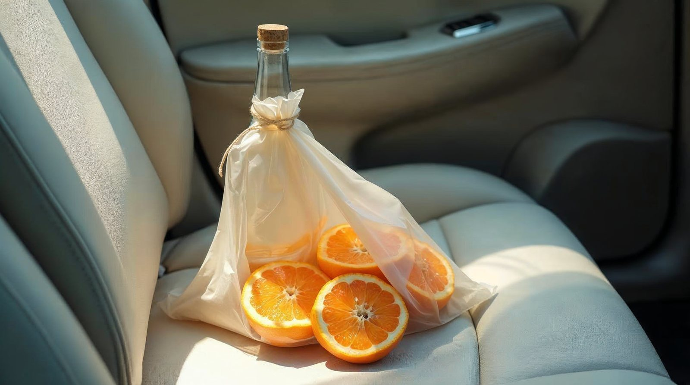
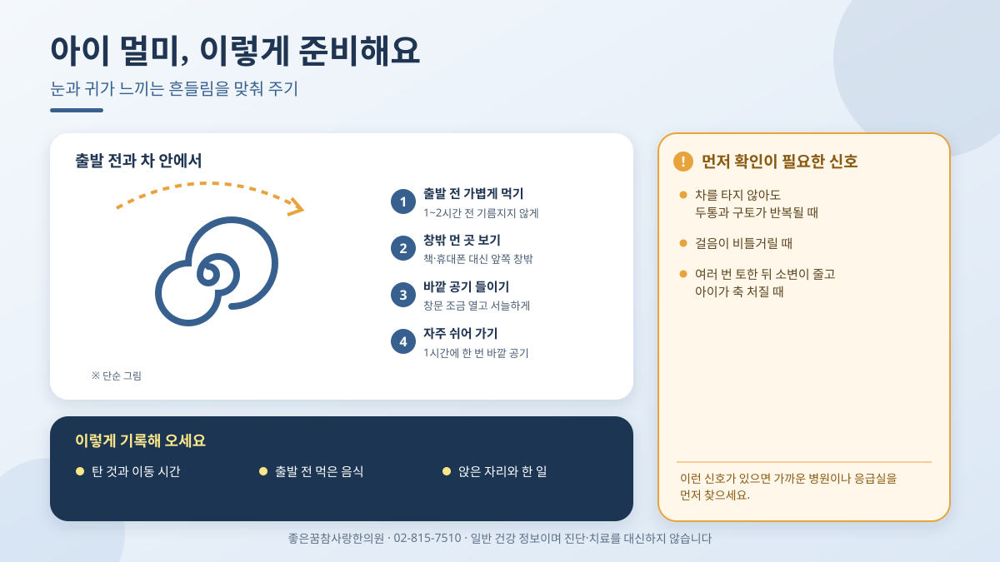

이종호 한의사 감수좋은꿈참사랑한의원 대표원장 (한의사 면허번호 19769)발행 2026-11-26 · 수정 2026-11-26
이 글의 차례
주말 아침, 할머니 댁에 가려고 아이를 카시트에 앉히고 출발합니다. 고속도로에 오르기도 전에 뒷자리가 조용해집니다. 돌아보면 아이 얼굴이 하얗게 질려 있고, 곧 속이 이상하다는 작은 목소리가 들립니다. 휴게소까지는 아직 한참 남았습니다.
이런 장면을 몇 번 겪고 나면 보호자도 차 타는 일이 부담스러워집니다. 비닐봉지와 물티슈를 잔뜩 챙기고, 아침밥을 먹여야 할지 굶겨야 할지 고민하고, 출발하기 전부터 마음이 조마조마합니다. 진료실에서도 명절이나 방학을 앞두고 멀미 이야기를 꺼내시는 보호자가 많습니다.
멀미는 아이 몸이 약해서 생기는 것이 아닙니다. 흔들리는 차 안에서 눈이 보는 것과 귀 안쪽 균형 기관이 느끼는 것이 서로 맞지 않을 때, 뇌가 그 엇갈림을 불편한 신호로 받아들이면서 생깁니다. 특히 초등학생 무렵 아이들이 이 엇갈림에 예민하게 반응하곤 합니다.
다행히 많은 아이가 자라면서 멀미가 줄어듭니다. 그 사이의 시간을 조금 더 편하게 보내도록 출발 전 준비와 차 안 습관을 함께 살펴보는 것이 이 글의 목표입니다. 저는 멀미 이야기를 들을 때 아이의 잠과 식사, 평소 소화, 긴장도를 함께 여쭙습니다.
멀미는 어떤 모습으로 나타나나요
멀미의 처음 신호는 생각보다 조용합니다. 아이가 갑자기 말이 줄고, 하품을 자주 하며, 얼굴이 창백해집니다. 침을 자주 삼키거나 식은땀을 흘리기도 하고, 몸을 축 늘어뜨리며 눈을 감으려 합니다.
이 단계를 지나면 속이 메스껍다, 머리가 아프다, 어지럽다는 말을 하고, 심하면 토합니다. 토하고 나면 잠깐 편해졌다가 차가 계속 흔들리면 다시 메스꺼워지는 경우가 많습니다. 차에서 내려 쉬면 대개 몇십 분에서 몇 시간 사이에 가라앉습니다.
어린아이는 메스껍다는 말을 잘 모르니, 칭얼거림, 갑자기 조용해짐, 창백함 같은 모습을 먼저 알아채는 것이 중요합니다. 처음 신호에서 차를 세우거나 창문을 열어 주면 토하기 전에 가라앉는 경우도 있습니다.
왜 아이들은 멀미를 더 잘할까요
멀미는 눈, 귀 안쪽 균형 기관, 몸의 근육과 관절에서 오는 정보가 서로 맞지 않을 때 생깁니다. 차 안에서 책이나 화면을 보면 눈은 가만히 있는 물체를 보는데, 귀 안쪽은 차가 흔들리고 기우는 것을 느낍니다. 뇌는 이 엇갈림을 이상한 신호로 받아들이고 메스꺼움을 일으킵니다.
- 아이는 균형 감각을 맞추는 과정이 아직 자라는 중이라 엇갈림에 예민합니다
- 카시트에 앉으면 창밖이 잘 보이지 않아 눈으로 흔들림을 미리 알기 어렵습니다
- 뒷자리는 앞자리보다 흔들림이 크게 느껴집니다
- 차 안 냄새, 더운 공기, 공복이나 과식이 메스꺼움을 키웁니다
- 한 번 토한 경험이 긴장을 만들어 다음 멀미를 부르기도 합니다
- 잠이 부족하거나 피곤한 날 더 쉽게 생깁니다
두 돌 전의 아기는 멀미가 드물고, 초등학생 무렵에 가장 흔하며, 사춘기를 지나며 줄어드는 경우가 많다고 알려져 있습니다. 보호자 가운데 어릴 때 멀미를 했던 분이 있으면 아이도 비슷한 경우가 많습니다.
마음의 긴장도 멀미에 영향을 줄까요
한 번 차에서 크게 토한 아이는 다음에 차를 탈 때 미리 걱정합니다. "또 토하면 어떡하지" 하는 생각에 몸이 긴장하고, 긴장하면 속이 더 쉽게 메스꺼워집니다. 그래서 멀미를 걱정하는 마음 자체가 멀미를 키우는 고리가 생기기도 합니다.
보호자가 출발 전부터 "토하면 안 돼", "멀미하지 마"라고 거듭 말하면 아이는 더 긴장할 수 있습니다. 대신 "속이 이상하면 바로 말해 줘, 그러면 창문 열어 줄게"처럼 아이가 할 수 있는 일을 알려 주시는 편이 마음을 편하게 해 줍니다.
토했을 때 놀란 표정을 짓거나 나무라지 않는 것도 중요합니다. 담담하게 정리하고 "괜찮아, 잠깐 쉬자"라고 말해 주면, 아이는 멀미를 실패가 아니라 그냥 지나가는 불편으로 받아들이게 됩니다.
다른 이유와는 어떻게 나눠 볼까요
멀미는 차를 탈 때 생기고, 내려서 쉬면 가라앉는다는 것이 가장 큰 특징입니다. 그런데 차를 타지 않을 때도 아침마다 토하거나, 두통이 점점 심해지거나, 걸음이 비틀거린다면 멀미가 아닌 다른 이유를 먼저 살펴야 합니다.
평소 어지럼을 자주 호소하는 아이라면 귀 질환이나 편두통이 함께 있는지도 봅니다. 소아 편두통이 있는 아이는 멀미를 더 잘하는 경향이 있다고 알려져 있어서, 머리가 아프다는 말을 자주 한다면 그 흐름도 함께 기록해 두시면 좋습니다.
배탈이나 장염 뒤에는 속이 예민해져 평소보다 멀미를 더 잘할 수 있습니다. 여행 직전에 아이가 배앓이를 했다면 그 사실도 함께 알려 주세요. 멀미인지, 소화가 아직 회복되지 않은 것인지 나눠 보는 데 도움이 됩니다.
버스와 배, 놀이기구는 어떻게 다를까요
같은 아이라도 탈것에 따라 멀미의 정도가 다릅니다. 관광버스는 차체가 높아 좌우 흔들림이 크게 느껴지고, 뒤쪽 자리는 위아래 출렁임이 더 크게 느껴집니다. 버스를 탈 때는 앞쪽, 창가 자리에 앉혀 앞 유리 너머 길을 보게 하는 것이 도움이 될 수 있습니다.
배는 느리고 큰 출렁임이 이어져 어른도 멀미를 많이 합니다. 갑판처럼 바깥 공기가 통하고 수평선이 보이는 곳에 있으면 조금 나은 경우가 많고, 배 한가운데 낮은 자리가 흔들림이 덜합니다. 선실 안에서 휴대폰을 보는 것은 피하시는 편이 좋습니다.
놀이기구나 그네처럼 빠르게 도는 움직임에도 멀미를 하는 아이가 있습니다. 이런 아이는 차 멀미도 함께 하는 경우가 많아, 어떤 움직임에서 불편한지를 나눠 기록해 두시면 귀 안쪽 균형 감각의 흐름을 이해하는 데 도움이 됩니다.

체험학습이나 수학여행을 앞두고 있다면
단체 버스로 떠나는 체험학습은 보호자가 곁에 없어 아이도 보호자도 더 걱정이 됩니다. 미리 담임 선생님께 멀미가 있다는 것을 알려 두고, 앞쪽 창가 자리에 앉을 수 있는지 여쭤 보세요. 비닐봉지와 물티슈, 작은 물병을 가방에 챙겨 주시면 아이도 마음이 놓입니다.
아이와 함께 '속이 이상할 때 할 일'을 미리 연습해 두는 것도 좋습니다. 창밖 먼 곳 보기, 천천히 숨 내쉬기, 선생님께 말하기처럼 아이가 스스로 할 수 있는 일을 정해 두면 긴장이 줄어듭니다. 전날은 일찍 재우고, 아침은 가볍게 먹여 보내 주세요.
먼저 이렇게 여쭙니다
처음 오시면 아래 질문들을 여쭙니다. 아이가 말할 수 있는 나이라면 아이에게도 직접 물어봅니다.
- 멀미는 몇 살 무렵부터 시작됐나요?
- 승용차, 버스, 배, 놀이기구 가운데 어디서 심한가요?
- 차에 탄 뒤 얼마 만에 신호가 오나요?
- 차 안에서 책이나 휴대폰을 보나요?
- 차를 타지 않을 때도 두통, 어지럼, 구토가 있나요?
- 평소 식사량, 소화, 대변은 어떤가요?
잠과 긴장도 함께 여쭙니다. 전날 늦게 잤는지, 여행 전에 들떠서 잠을 설쳤는지, 차 타는 것을 미리 걱정하는지에 따라 같은 길에서도 멀미의 정도가 달라질 수 있습니다.

일상에서 먼저 해 볼 수 있는 것
멀미를 줄이는 방법의 핵심은 눈과 귀가 느끼는 흔들림을 맞춰 주고, 속을 편하게 해 주는 것입니다. 아이에게 맞는 방법을 몇 번에 걸쳐 찾아보세요.
- 출발 1~2시간 전에 기름지지 않은 음식으로 가볍게 먹이기
- 차 안에서는 책이나 휴대폰 대신 멀리 앞쪽 창밖을 보게 하기
- 카시트는 바르게 설치하되, 가능하면 앞이 잘 보이는 뒷자리 가운데에 두기
- 창문을 조금 열어 바깥 공기가 들어오게 하고, 차 안을 서늘하게 유지하기
- 방향제나 음식 냄새처럼 강한 냄새는 줄이기
- 1시간에 한 번쯤 쉬어 가며 바깥 공기 쐬기
출발 시각을 아이의 낮잠 시간에 맞추는 것도 방법입니다. 잠든 동안에는 눈이 흔들림을 보지 않아 엇갈림이 줄어듭니다. 차 안에서 노래를 부르거나 끝말잇기처럼 화면 없이 할 수 있는 놀이를 하면 메스꺼움에서 주의를 돌리는 데 도움이 될 수 있습니다.
운전하는 분은 급출발, 급정거, 급한 차선 변경을 줄여 주세요. 구불구불한 길은 천천히 지나가는 것이 좋습니다. 흔들림의 크기와 횟수가 줄면 아이 몸이 받는 엇갈림도 그만큼 줄어듭니다.
멀미약은 아이 나이와 몸무게에 따라 쓸 수 있는 종류와 양이 다릅니다. 붙이는 멀미약 가운데는 어린아이에게 쓰지 않는 것도 있어서, 쓰기 전에 약사나 소아청소년과 선생님과 상의하시길 권합니다.
생강차나 생강을 넣은 따뜻한 물을 조금 마시면 속이 편하다는 아이도 있습니다. 다만 맛이 강해 싫어하는 아이도 많으니 억지로 먹이지는 마시고, 집에서 미리 맛을 보여 준 뒤 괜찮아하면 챙겨 가 보세요. 박하처럼 시원한 맛도 주의를 돌리는 데 도움이 될 수 있지만, 딱딱한 사탕은 목에 걸릴 수 있어 어린아이에게는 주지 않는 편이 안전합니다.
토했을 때는 어떻게 돌보면 좋을까요
아이가 토하면 먼저 차를 안전한 곳에 세우고, 아이를 바깥 공기가 통하는 곳에 잠시 앉혀 주세요. 입을 헹구게 하고 물을 조금씩 나눠 마시게 합니다. 한꺼번에 많이 마시면 다시 토할 수 있으니 몇 모금씩 천천히 주시는 것이 좋습니다.
토한 뒤에는 옷과 카시트 냄새가 다시 메스꺼움을 부를 수 있어, 갈아입을 옷과 비닐, 물티슈를 미리 챙겨 두시면 수월합니다. 아이가 기운이 없어 하면 잠시 눈을 감고 쉬게 해 주세요.
도착한 뒤에는 기름진 음식보다 죽이나 미음, 바나나처럼 부드러운 음식부터 조금씩 주시면 됩니다. 대개 몇 시간 안에 기운을 되찾고 평소처럼 놀기 시작합니다.
한의원에서 함께 살필 수 있는 경우
- 짧은 거리에서도 멀미가 잦아 등하교나 체험학습이 부담스러운 경우
- 평소에도 입이 짧고 소화가 약해 속이 자주 메스꺼운 경우
- 손발이 차고 쉽게 지치며 잠이 얕은 경우
- 차 타는 것을 미리 걱정해 출발 전부터 배가 아프다고 하는 경우
- 어지럼이나 두통을 자주 호소해 함께 살펴보고 싶은 경우
좋은꿈참사랑한의원에 오시면 모든 분의 맥을 먼저 짚고, 아이의 소화, 잠, 손발 온도, 긴장도를 함께 살핍니다. 진찰한 내용을 바탕으로 생활 관리 안내와 한약 상담 가운데 지금 상태에 맞는 것을 고르고, 침은 보호자와 먼저 상의합니다.
아이가 침을 무서워하면 미리 말씀해 주세요. 한약을 상의할 때는 아이가 먹는 약과 알레르기를 모두 확인하고, 나이와 몸무게에 맞춰 신중하게 정합니다. 소아청소년과 진료가 필요하다면 함께 받으시도록 안내합니다.
진료 날에는 아이가 좋아하는 장난감이나 책을 하나 챙겨 오셔도 좋습니다. 낯선 곳에서 긴장한 아이도 익숙한 물건이 곁에 있으면 한결 편하게 진찰을 받을 수 있습니다.
이렇게 기록해 오시면 상담이 쉬워집니다
여행이나 등하교 때 멀미가 있었던 날을 몇 번만 적어 오셔도 아이에게 맞는 방법을 찾는 데 큰 도움이 됩니다.
- 탄 것(승용차, 버스, 배 등)과 이동 시간
- 출발 전에 먹은 음식과 시각
- 앉은 자리와 차 안에서 한 일(창밖 보기, 휴대폰, 잠)
- 멀미가 시작된 시점과 토했는지 여부
- 전날 잠든 시각과 그날 컨디션
- 해 본 방법 가운데 도움이 된 것
기록을 모아 보면 아침을 거른 날, 휴대폰을 본 날, 뒷자리 구석에 앉은 날처럼 멀미가 커지는 조건이 드러나곤 합니다. 그 조건을 하나씩 바꿔 가다 보면 아이와 보호자 모두 차 타는 시간이 조금 더 편해질 수 있습니다.
차 타는 시간이 조금 더 편해지도록
멀미는 아이가 잘못해서 생기는 것도, 보호자가 잘못 챙겨서 생기는 것도 아닙니다. 자라는 몸이 흔들림에 적응해 가는 과정에서 생기는 불편이라, 조급해하지 않고 아이에게 맞는 방법을 하나씩 찾아가면 됩니다.
다음 외출 때는 창밖 보기와 출발 전 가벼운 식사, 이 두 가지만 먼저 해 보세요. 결과를 적어 오시면 다음 진료 때 아이의 소화와 잠의 흐름과 함께 나란히 놓고 살펴보겠습니다.
이런 증상은 먼저 확인이 필요합니다
- 차를 타지 않았는데도 심한 두통이나 구토가 반복되거나, 걸음이 비틀거리는 경우
- 여러 번 토한 뒤 소변이 크게 줄거나, 입이 바짝 마르거나, 아이가 축 처지는 경우
이런 신호가 있으면 한의원보다 가까운 병원이나 응급실을 먼저 찾으세요.
함께 읽으면 좋은 글
- 아이가 차만 타면 멀미를 할 때는 어떻게 준비하면 좋을까요?
- 누워서 고개를 돌리거나 일어날 때 빙글 도는 어지럼이 있을 때는 어떻게 하나요?
- 아이가 머리가 아프다는 말을 자주 할 때(소아 두통)는 무엇을 살피나요?
- 아이가 배가 아프다고 할 때 위치와 시간은 어떻게 적어 두면 좋을까요?

여쭙는 것
- 멀미는 몇 살 무렵부터 시작됐나요?
- 승용차, 버스, 배, 놀이기구 가운데 어디서 심한가요?
- 차에 탄 뒤 얼마 만에 신호가 오나요?
생활에서 해 볼 것
- 출발 1~2시간 전에 기름지지 않은 음식으로 가볍게 먹이기
- 차 안에서는 책이나 휴대폰 대신 멀리 앞쪽 창밖을 보게 하기
- 카시트는 바르게 설치하되, 가능하면 앞이 잘 보이는 뒷자리 가운데에 두기
한의원에서 함께 살필 것
- 짧은 거리에서도 멀미가 잦아 등하교나 체험학습이 부담스러운 경우
- 평소에도 입이 짧고 소화가 약해 속이 자주 메스꺼운 경우
- 손발이 차고 쉽게 지치며 잠이 얕은 경우
먼저 확인이 필요한 신호
- 차를 타지 않았는데도 심한 두통이나 구토가 반복되거나, 걸음이 비틀거리는 경우
- 여러 번 토한 뒤 소변이 크게 줄거나, 입이 바짝 마르거나, 아이가 축 처지는 경우
한눈에 보는 표
| 구분 | 핵심 |
|---|---|
| 여쭙는 것 | 멀미는 몇 살 무렵부터 시작됐나요? 승용차, 버스, 배, 놀이기구 가운데 어디서 심한가요? |
| 생활에서 해 볼 것 | 출발 1~2시간 전에 기름지지 않은 음식으로 가볍게 먹이기 차 안에서는 책이나 휴대폰 대신 멀리 앞쪽 창밖을 보게 하기 |
| 한의원에서 함께 살필 것 | 짧은 거리에서도 멀미가 잦아 등하교나 체험학습이 부담스러운 경우 평소에도 입이 짧고 소화가 약해 속이 자주 메스꺼운 경우 |
| 먼저 확인이 필요한 신호 | 차를 타지 않았는데도 심한 두통이나 구토가 반복되거나, 걸음이 비틀거리는 경우 여러 번 토한 뒤 소변이 크게 줄거나, 입이 바짝 마르거나, 아이가 축 처지는 경우 |
자주 묻는 질문
멀미하는 아이는 출발 전에 굶기는 것이 좋을까요?
빈속은 오히려 메스꺼움을 키울 수 있습니다. 출발 1~2시간 전에 기름지지 않은 음식으로 가볍게 먹이고, 차 안에서는 과식을 피하는 쪽을 권합니다.
아이에게 멀미약을 먹여도 되나요?
멀미약은 나이와 몸무게에 따라 쓸 수 있는 종류와 양이 다르고, 붙이는 약 가운데는 어린아이에게 쓰지 않는 것도 있습니다. 쓰기 전에 약사나 소아청소년과 선생님과 상의해 주세요.
멀미는 자라면서 나아지나요?
많은 아이가 사춘기를 지나며 멀미가 줄어드는 흐름을 보입니다. 그 사이에는 앉는 자리, 창밖 보기, 출발 전 식사 같은 생활 방법으로 부담을 줄여 갈 수 있습니다.
차 안에서 휴대폰을 보여 주면 안 되나요?
화면을 가까이 보면 눈과 귀가 느끼는 흔들림이 더 크게 엇갈려 멀미가 쉽게 생깁니다. 대신 창밖 먼 곳을 보게 하거나 노래, 말놀이처럼 화면 없이 할 수 있는 놀이를 권합니다.
좋은꿈참사랑한의원은 재진 때 지난번 이야기부터 이어서 여쭙니다. 진료시간과 예약은 오시는 길에서 확인하세요.
어디서 상담받을 수 있나요?
좋은꿈참사랑한의원은 서울 동작구 만양로2길 2 신성빌딩 3층·5층(서울 동작구 상도동, 7호선 상도역 3번 출구 근처)에 있습니다. 한의사 3명(이종호 대표원장, 조영기 수석진료원장, 정원영 진료원장)이 진료합니다. 진료시간은 평일 09:30~20:00(점심 13:00~14:00), 토·일·공휴일 09:30~15:00이며, 방문 전 전화로 확인을 권합니다. 예약은 네이버 예약, 카카오톡 상담, 전화 02-815-7510로 받습니다.
이 글은 일반적인 건강 정보이며 개인의 진단이나 치료를 대신하지 않습니다. 증상이 있거나 복용 중인 약이 있다면 진료를 통해 확인하세요. 치료 효과는 개인마다 다를 수 있습니다.
작성 기준: 일반적으로 알려져 있는 건강 정보를 참고해 정리했습니다(대표원장 감수). 증상 기록은 1~2주 동안 하루 1회, 비슷한 시간에 적어 오시면 지난 상태와 비교하기 쉽습니다.